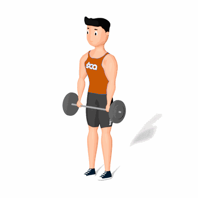

Encolhimento com Barra

Esse exercício ajuda a trabalhar a contração de toda a região do trapézio. Dessa maneira, é possível desenvolver os músculos e estimular tanto o crescimento como o fortalecimento.
Ficha Técnica
Tipo: Musculação
Grupo Muscular: Ombro
Aparelho: Nenhum
Músculos: Nenhum
Como realizar
- Fique de pé com a largura dos ombros e segure uma barra com pegada pronada;
- Relaxe os ombros para que eles pendurem o mais baixo possível;
- Levante a barra lentamente levantando os ombros em um movimento único e vertical;
- Aguarde uma contagem de um;
- Relaxe lentamente os ombros para voltar à posição de início.
 RC STORE
RC STORE